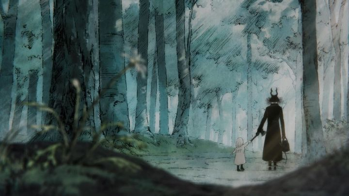

Disclaimer: This is a review of "The Girl From The Other Side - Siuil, a Run," a 2022 69-minute OVA film (also sometimes released as 3 shorter tv-length episodes), not to be confused with the 10-minute 2019 short of the same name and studio. I don't read Japanese manga often, but the series "The Girl From The Other Side" is a great entry point. Using Nagabe's unique pencil-sketch art style and a European setting, it's about the mystery of outsider monsters that curse any human that touches them, and a lost little human girl that falls into the care of one such monster. Even if you don't like Japanese art styles or stories for whatever reason, it's a captivating book to pick up. And fairly popular too, so you'd think an anime would be produced in quick order.... however, it's a difficult art style to faithfully reproduce. Which is probably why Wit Studio attempted an adaptation with a 10-minute short film in 2019, as an experiment. It was deemed successful, so they launched a Kickstarter crowdfunding campaign to produce a feature-length version of the short. That feature-film (technically an OVA, not an theatrical movie) is what I'm talking about today, screened at the 2022 Fantasia Film Festival in Montreal, with the directors in attendance. While I'm pleased with the movie, I still can't help but wonder about the hesitation with the production. Why produce the story in small steps like this? Why use crowdfunding for what was already a popular manga? Why a single movie that only covers a few manga volumes, and why not commit to the full story, either in a film series or a tv adaptation? It felt like this was a labor of love by a smaller subset of Wit Studio, where the majority of funding and resources were towards other series that were more traditional and likely to produce a bigger profit. Even so, I wouldn't be surprised if yet a third adaptation of the initial story arc was produced, if this OVA proves successful.The interesting thing about how the "Other Side" movie was directed is how it intentionally tries to confuse the viewer through ambiguity and refusing to spell things out. The opening minutes are a series of abstract visuals and sounds before showing us Shiva, a little girl in a white gown sleeping in the woods, and Teacher, a well-dressed horned monster that discovers her, as well as a nearby band of knights patrolling the forest. Being careful not to directly touch her, Teacher leads Shiva to an abandoned house where he lives, helping her rest and eat before they set off elsewhere. Teacher belives he was once human, but his forgotten memories back him unsure. Shiva appears to be alive, so maybe there's a chance to save her by brining her to a nearby village, assuring that she isn't one of the cursed. If the village is familiar, perhaps it would help Teacher regain his memories. Unfortunately, the humans aren't as trusting as Shiva is after seeing Teacher, and other cursed monsters seem eager to eat Shiva's soul (or to offer it to Mother).  The assumption we're left with is that perhaps Shiva is dead, that this is a metaphor of the afterlife and real world crossing into each other. Or perhaps it's a plague that shuns out the infected, leading them to create their own society that's antagonistic to the humans. Some answers might be inferred, but nothing is spelled out by the end of this movie. It makes it frustratingly less accessible, but I think I respect it more as well. The movie has an open-ended conclusion, leaving things unresolved but in a satisfactory place, and encouraging viewers to support the manga (which at this time, has a completed ending). Visually, the movie is at its most impressive during flashbacks and dreams, when it uses abstract images and techniques, even as raw as pencil-on-paper rough animation. These moments are beautiful, but unsustainable for a full movie, so it primarily uses a more consistent and simplier style. That main style best matches Nagabe's manga, and is a good balance of production quality and realistic expectations. For anime, it looks wholly original, and the gothic-European asthetic is very pleasant. Even as a second attempt, this feature-length OVA of "The Girl From The Other Side" still feels like an experiment as opposed to a final definitive adaptation. It certainly doesn't cover the full story. But even then, the source material is so beautiful, and the film was true in tone and style to it, that it's hard not to give it high praise.
- "Ani" More reviews can be found at : https://2danicritic.github.io/ Previous review: review_The_Garden_of_Words Next review: review_The_Girl_Who_Leapt_Through_Time